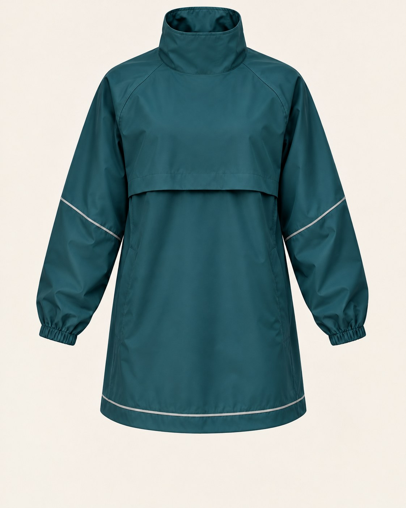
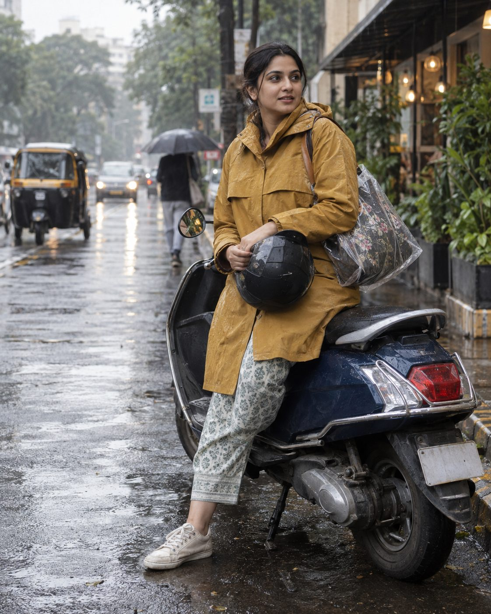
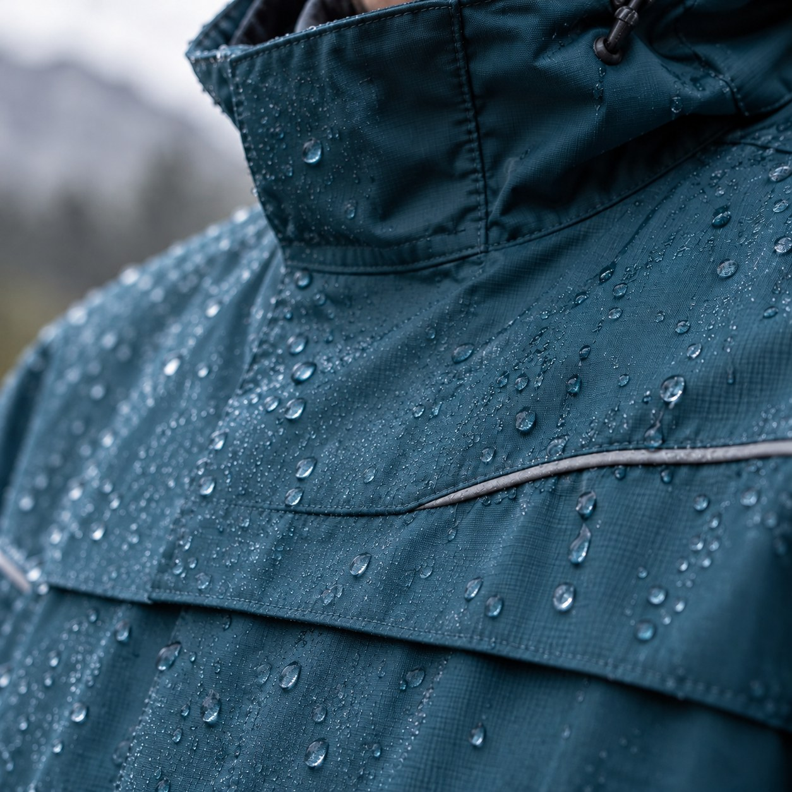

A pullover rain jacket cut to go over work clothes, on a scooter, with a cover for your bag. Built around one promise we can test in public: no leaks.
CONCEPT BRAND - NOT ON SALE - NAME IS PROVISIONAL"I have been looking for a good raincoat all my life, have tried different brands and none worked."
"The zipped rain jackets from Decathlon are crap, they leak through the zip after a few rains."
"Mine zeel started leaking water through zipper tho it's having covers idk how."
Source: one Reddit thread, r/BuyItForLifeIndia ("Raincoats for Indian monsoon"). Anecdotes, not a survey. The same thread also praises Duckback and Zeel for lasting years. Open thread

Concept spec. None of this is built or tested yet. The image is an illustration, not a real product.

One cut for most men and one for most women, in teal and ochre. The women's cut is an assumption to test: shorter shoulder, more room at the hip so it does not ride up on a seat.
Target price: Rs 2,299 (assumption). It sits above plastic and basic poncho sets and around the rider over-jackets listed below.
Waterproof claims are cheap. A public test is not.

Illustration only. It shows the idea, not a tested seal.
| Brand | What it is | Price seen | Where we differ |
|---|---|---|---|
| Rynox H2GO Pro 4 | Rain jacket for riders, meant over a riding jacket and a backpack | Rs 1,990 | We aim at work clothes, not riding gear. Their jacket already covers rider use. |
| Solace Rainpro (V3.0 / 16K) | Motorcycle rain jacket, high collar, reflective | Rs 1,799-1,850 | Same: rider-focused, moto styling. |
| Axor Hydro, Varsha NeonShield | High-visibility riding rain jacket / suit | not captured | We use subtle reflective trim, not a hi-vis look. |
| Zeel, Duckback | Mass-market raincoats | Rs 599-2,499 (third-party roundup) | Owners praise their durability. Our edge is fit and no zip, which we must prove. |
| Decathlon, Wildcraft | Outdoor jackets | about Rs 2,500 (one commenter) | Zip leaks reported by commenters. |
| Plastic ponchos | Unbranded | about Rs 100 | Cheap, widely used. |